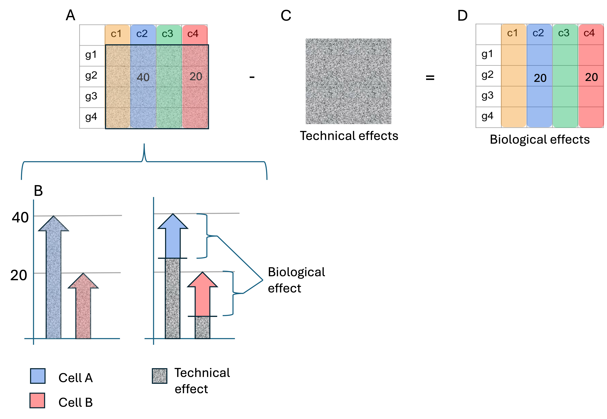
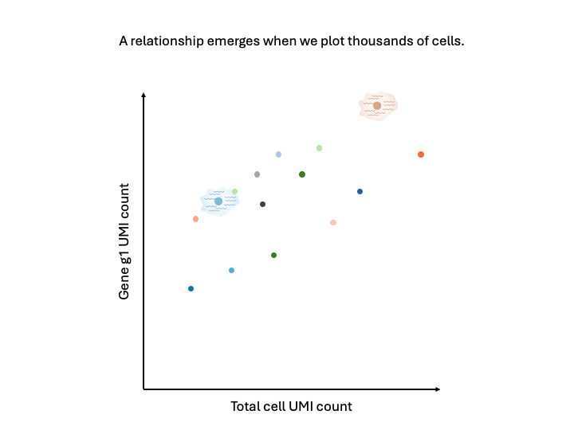
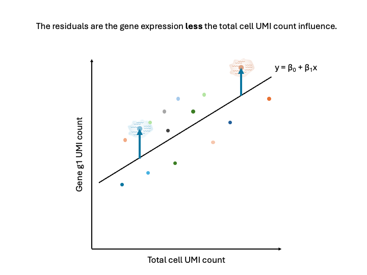
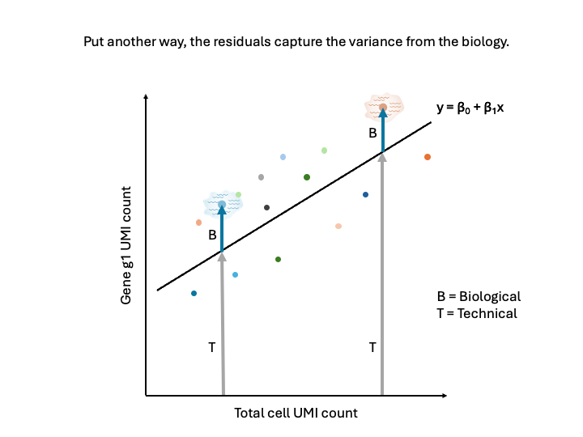

Workflow Overview

Introduction
After removing low-quality cells from the data, the next task is the
normalization and variance stabilization of the counts for downstream
analysis.
Variation in scRNA-seq data comes from biological sources:
- Differences in cell type or state
- Differences in response to treatment
And from technical sources:
- Fluctuations in cellular RNA content
- Efficiency in lysis and reverse transcription
- Stochastic sampling during sequencing
|

|
A. The counts reported in the feature barcode matrix are a blend of
technical and biological effects.
B. Technical effects can distort
or mask the biological effects of interest; this can confound downstream
analyses.
C. Seurat can model the technical effects based on
overall patterns in expression across all cells.
D. Once these
technical effects are minimized, the remaining signal is primarily
biological variance.
|
It is important to control for the technical sources of variation
without removing the biological sources of variation. A key driver of
technical variation is cellular sequencing depth (that is, the number of
UMIs sequenced per cell). In the figure below, Sample A (left, red
reads) is more deeply sequenced than Sample B (right, green reads). In a
test for differential expression, we want to account for the difference
in sequencing depth to avoid erroneously calling a gene differentially
expressed.

Image: Different sequencing depths can
erroneously imply differential expression. Source:
HBC
training materials.
Objectives
- Understand why normalization is needed.
- Describe the essence of the
SCTransform() method.
- Understand normalization options.
- Normalize the counts with
SCTransform().
Normalization
We will use the SCTransform() function, which uses a
generalized linear model (GLM) framework to account for cell-level
sequencing depth while also stabilizing the variance of the counts.
Let’s get the normalization started, as it takes a little time, and then
we can explain what it’s doing and why it is an improvement on alternate
methods.
First, we’ll run the following command to separate the data from each
sample into layers, a requirement of Seurat v5:
geo_so[['RNA']] = split(geo_so[['RNA']], f = geo_so$orig.ident)
geo_so
An object of class Seurat
26489 features across 31560 samples within 1 assay
Active assay: RNA (26489 features, 0 variable features)
12 layers present: counts.HO.Day0.replicate1, counts.HO.Day0.replicate2, counts.HO.Day0.replicate3, counts.HO.Day0.replicate4, counts.HO.Day21.replicate1, counts.HO.Day21.replicate2, counts.HO.Day21.replicate3, counts.HO.Day21.replicate4, counts.HO.Day7.replicate1, counts.HO.Day7.replicate2, counts.HO.Day7.replicate3, counts.HO.Day7.replicate4
We see the 12 layers containing the count data for each of the
samples. Next, run SCTransform():
geo_so = SCTransform(geo_so)
Normalization explained
To get the idea of what SCTransform() is doing, we’ll
consider a simplified example.

Consider two cells that are identical in terms of their type,
expression, etc. Imagine that we put them through the microfluidic
device and then sequenced the RNA content.

If we were to plot the total cell UMI count against a particular gene
UMI count, in an ideal world, the points should be directly on top of
each other because the cells had identical expression and everything
done to measure that expression went perfectly.

However, we don’t live in a perfect world. We will likely observe the
cells have different total cell UMI counts as well as different gene UMI
counts. This difference, given that the cells were identical, can be
attributed to technical factors. For example, efficiency in lysis or in
reverse transcription, or the stoachastic sampling that occurs during
sequencing.
It is these technical factors that normalization seeks to
correct for, getting us back to the “true” expression
state.

Imagine doing this for thousands of cells. We would get a point cloud
like the above. Importantly, that point cloud has
structure. There is a relationship between the total cell UMI
count and the gene UMI count for each gene.

We could fit a line through the point cloud, where we estimate the
intercept, the slope, and the error.

The residuals, or the distance from the point to the line, represents
the expression of the gene less the total cell UMI count influence.

In other words, the residuals represent the biological variance, and
the regression removes the technical variance. Note now that the
residuals are the about the same for the two cells.
Additional details
The full description and justification of the
SCTransform() function are provided in two excellent
papers:
Hafemeister & Satija, Normalization and variance
stabilization of single-cell RNA-seq data using regularized negative
binomial regression, 2019, Genome Biology (link)
Choudhary & Satija, Comparison and evaluation of
statistical error models for scRNA-seq, 2022, Genome Biology (link)
A benefit of the this framework for normalization is that the model
can include other terms which can account for unwanted technical
variation. One example of this is the percent mitochondrial reads
(percent.mt). The vars.to.regress parameter of
SCTransform() is used for this purpose. See the documentation
for details.
Other normalizations
From the Seurat documentation, the SCTransform()
function “replaces NormalizeData(),
ScaleData(), and FindVariableFeatures()”. This
chain of functions is referred to as the “log-normalization procedure”.
You may see these three commands in other vignettes, and even in other
Seurat vignettes (source).
In the two papers referenced above, the authors show how the
log-normalization procedure does not always fully account for cell
sequencing depth and overdispersion. Therefore, we urge you to use this
alternative pipeline with caution.
Normalization, continued
By now, SCTransform() should have finished running, so
let’s take a look at the result:
geo_so
An object of class Seurat
46955 features across 31560 samples within 2 assays
Active assay: SCT (20466 features, 3000 variable features)
3 layers present: counts, data, scale.data
1 other assay present: RNA
We observe that the active assay is now “SCT”, but that the “RNA”
assay is still present. SCTransform() has also determined
the common variable features across the cells to be used in our
downstream analysis.
Save our progress
Let’s save this normalized form of our Seurat object.
saveRDS(geo_so, file = 'results/rdata/geo_so_sct_normalized.rds')
Summary
In this section we have run the SCTransform() function
to account for variation in cell sequencing depth and to stabilize the
variance of the counts.
Next steps: PCA and integration
These materials have been adapted and extended from materials listed
above. These are open access materials distributed under the terms of
the Creative
Commons Attribution license (CC BY 4.0), which permits unrestricted
use, distribution, and reproduction in any medium, provided the original
author and source are credited.
LS0tCnRpdGxlOiAiTm9ybWFsaXphdGlvbiIKYXV0aG9yOiAiVU0gQmlvaW5mb3JtYXRpY3MgQ29yZSIKZGF0ZTogImByIFN5cy5EYXRlKClgIgpvdXRwdXQ6CiAgICAgICAgaHRtbF9kb2N1bWVudDoKICAgICAgICAgICAgaW5jbHVkZXM6CiAgICAgICAgICAgICAgICBpbl9oZWFkZXI6IGhlYWRlci5odG1sCiAgICAgICAgICAgIHRoZW1lOiBwYXBlcgogICAgICAgICAgICB0b2M6IHRydWUKICAgICAgICAgICAgdG9jX2RlcHRoOiA0CiAgICAgICAgICAgIHRvY19mbG9hdDogdHJ1ZQogICAgICAgICAgICBudW1iZXJfc2VjdGlvbnM6IGZhbHNlCiAgICAgICAgICAgIGZpZ19jYXB0aW9uOiB0cnVlCiAgICAgICAgICAgIG1hcmtkb3duOiBHRk0KICAgICAgICAgICAgY29kZV9kb3dubG9hZDogdHJ1ZQotLS0KCjxzdHlsZSB0eXBlPSJ0ZXh0L2NzcyI+CmJvZHksIHRkIHsKICAgZm9udC1zaXplOiAxOHB4Owp9CmNvZGUucnsKICBmb250LXNpemU6IDEycHg7Cn0KcHJlIHsKICBmb250LXNpemU6IDEycHgKfQoKdGFibGUuZmlnLCB0aC5maWcsIHRkLmZpZyB7CiAgYm9yZGVyOiAxcHggc29saWQgYmxhY2s7CiAgYm9yZGVyLWNvbGxhcHNlOiBjb2xsYXBzZTsKICBwYWRkaW5nOiAxNXB4Owp9Cjwvc3R5bGU+CgpgYGB7ciwgaW5jbHVkZSA9IEZBTFNFfQpzb3VyY2UoIi4uL2Jpbi9jaHVuay1vcHRpb25zLlIiKQprbml0cl9maWdfcGF0aCgiMDMtTm9ybWFsaXphdGlvbi8wMy0iKQpgYGAKCiMgV29ya2Zsb3cgT3ZlcnZpZXcgey51bmxpc3RlZCAudW5udW1iZXJlZH0KCjxici8+CjxpbWcgc3JjPSJpbWFnZXMvd2F5ZmluZGVyL3dheWZpbmRlci5wbmciIGFsdD0id2F5ZmluZGVyIiBzdHlsZT0iaGVpZ2h0OiA0MDBweDsiLz4KPGJyLz4KPGJyLz4gCgojIEludHJvZHVjdGlvbiAKCkFmdGVyIHJlbW92aW5nIGxvdy1xdWFsaXR5IGNlbGxzIGZyb20gdGhlIGRhdGEsIHRoZSBuZXh0IHRhc2sgaXMgdGhlIG5vcm1hbGl6YXRpb24gYW5kIHZhcmlhbmNlIHN0YWJpbGl6YXRpb24gb2YgdGhlIGNvdW50cyBmb3IgZG93bnN0cmVhbSBhbmFseXNpcy4gCgpWYXJpYXRpb24gaW4gc2NSTkEtc2VxIGRhdGEgY29tZXMgZnJvbSBiaW9sb2dpY2FsIHNvdXJjZXM6CgotIERpZmZlcmVuY2VzIGluIGNlbGwgdHlwZSBvciBzdGF0ZQotIERpZmZlcmVuY2VzIGluIHJlc3BvbnNlIHRvIHRyZWF0bWVudAoKQW5kIGZyb20gdGVjaG5pY2FsIHNvdXJjZXM6CgotIEZsdWN0dWF0aW9ucyBpbiBjZWxsdWxhciBSTkEgY29udGVudAotIEVmZmljaWVuY3kgaW4gbHlzaXMgYW5kIHJldmVyc2UgdHJhbnNjcmlwdGlvbgotIFN0b2NoYXN0aWMgc2FtcGxpbmcgZHVyaW5nIHNlcXVlbmNpbmcKCjx0YWJsZSBjbGFzcz0nZmlnJz4KPHRyIGNsYXNzPSdmaWcnPjx0ZCBjbGFzcz0nZmlnJz4hW10oaW1hZ2VzL2dyYXBoaWNhbF9hYnN0cmFjdHMvZ3JhcGhpY2FsX2Fic3RyYWN0X25vcm1hbGl6YXRpb24ucG5nKTwvdGQ+PC90cj4KPHRyIGNsYXNzPSdmaWcnPjx0ZCBjbGFzcz0nZmlnJz5BLiBUaGUgY291bnRzIHJlcG9ydGVkIGluIHRoZSBmZWF0dXJlIGJhcmNvZGUgbWF0cml4IGFyZSBhIGJsZW5kIG9mIHRlY2huaWNhbCBhbmQgYmlvbG9naWNhbCBlZmZlY3RzLiA8YnIvPgpCLiBUZWNobmljYWwgZWZmZWN0cyBjYW4gZGlzdG9ydCBvciBtYXNrIHRoZSBiaW9sb2dpY2FsIGVmZmVjdHMgb2YgaW50ZXJlc3Q7IHRoaXMgY2FuIGNvbmZvdW5kIGRvd25zdHJlYW0gYW5hbHlzZXMuIDxici8+CkMuIFNldXJhdCBjYW4gbW9kZWwgdGhlIHRlY2huaWNhbCBlZmZlY3RzIGJhc2VkIG9uIG92ZXJhbGwgcGF0dGVybnMgaW4gZXhwcmVzc2lvbiBhY3Jvc3MgYWxsIGNlbGxzLiA8YnIvPgpELiBPbmNlIHRoZXNlIHRlY2huaWNhbCBlZmZlY3RzIGFyZSBtaW5pbWl6ZWQsIHRoZSByZW1haW5pbmcgc2lnbmFsIGlzIHByaW1hcmlseSBiaW9sb2dpY2FsIHZhcmlhbmNlLjwvdGQ+PC90cj4KPC90YWJsZT4KPGJyLz4KCkl0IGlzIGltcG9ydGFudCB0byBjb250cm9sIGZvciB0aGUgdGVjaG5pY2FsIHNvdXJjZXMgb2YgdmFyaWF0aW9uIHdpdGhvdXQgcmVtb3ZpbmcgdGhlIGJpb2xvZ2ljYWwgc291cmNlcyBvZiB2YXJpYXRpb24uIEEga2V5IGRyaXZlciBvZiB0ZWNobmljYWwgdmFyaWF0aW9uIGlzIGNlbGx1bGFyIHNlcXVlbmNpbmcgZGVwdGggKHRoYXQgaXMsIHRoZSBudW1iZXIgb2YgVU1JcyBzZXF1ZW5jZWQgcGVyIGNlbGwpLiBJbiB0aGUgZmlndXJlIGJlbG93LCBTYW1wbGUgQSAobGVmdCwgcmVkIHJlYWRzKSBpcyBtb3JlIGRlZXBseSBzZXF1ZW5jZWQgdGhhbiBTYW1wbGUgQiAocmlnaHQsIGdyZWVuIHJlYWRzKS4gSW4gYSB0ZXN0IGZvciBkaWZmZXJlbnRpYWwgZXhwcmVzc2lvbiwgd2Ugd2FudCB0byBhY2NvdW50IGZvciB0aGUgZGlmZmVyZW5jZSBpbiBzZXF1ZW5jaW5nIGRlcHRoIHRvIGF2b2lkIGVycm9uZW91c2x5IGNhbGxpbmcgYSBnZW5lIGRpZmZlcmVudGlhbGx5IGV4cHJlc3NlZC4KCiFbSW1hZ2U6IERpZmZlcmVudCBzZXF1ZW5jaW5nIGRlcHRocyBjYW4gZXJyb25lb3VzbHkgaW1wbHkgZGlmZmVyZW50aWFsIGV4cHJlc3Npb24uIFNvdXJjZTogW0hCQyB0cmFpbmluZyBtYXRlcmlhbHNdKGh0dHBzOi8vaGJjdHJhaW5pbmcuZ2l0aHViLmlvL0RHRV93b3Jrc2hvcC9sZXNzb25zLzAyX0RHRV9jb3VudF9ub3JtYWxpemF0aW9uLmh0bWwpLl0oaW1hZ2VzL2N1cnJpY3VsdW0vMDMtTm9ybWFsaXphdGlvbi9ub3JtYWxpemF0aW9uX2RlcHRoLnBuZykKCiMjIE9iamVjdGl2ZXMKCi0gVW5kZXJzdGFuZCB3aHkgbm9ybWFsaXphdGlvbiBpcyBuZWVkZWQuCi0gRGVzY3JpYmUgdGhlIGVzc2VuY2Ugb2YgdGhlIGBTQ1RyYW5zZm9ybSgpYCBtZXRob2QuCi0gVW5kZXJzdGFuZCBub3JtYWxpemF0aW9uIG9wdGlvbnMuCi0gTm9ybWFsaXplIHRoZSBjb3VudHMgd2l0aCBgU0NUcmFuc2Zvcm0oKWAuCgotLS0KCmBgYHtyLCByZWFkX3Jkc19oaWRkZW4sIGVjaG8gPSBGQUxTRSwgd2FybmluZyA9IEZBTFNFLCBtZXNzYWdlID0gRkFMU0V9CmlmKCFleGlzdHMoJ2dlb19zbycpKSB7CiAgbGlicmFyeShTZXVyYXQpCiAgbGlicmFyeShCUENlbGxzKQogIGxpYnJhcnkodGlkeXZlcnNlKQoKICBvcHRpb25zKGZ1dHVyZS5nbG9iYWxzLm1heFNpemUgPSAxZTkpCgogIGdlb19zbyA9IHJlYWRSRFMoJ3Jlc3VsdHMvcmRhdGEvZ2VvX3NvX2ZpbHRlcmVkLnJkcycpCn0KYGBgCgojIE5vcm1hbGl6YXRpb24KCldlIHdpbGwgdXNlIHRoZSBgU0NUcmFuc2Zvcm0oKWAgZnVuY3Rpb24sIHdoaWNoIHVzZXMgYSBnZW5lcmFsaXplZCBsaW5lYXIgbW9kZWwgKEdMTSkgZnJhbWV3b3JrIHRvIGFjY291bnQgZm9yIGNlbGwtbGV2ZWwgc2VxdWVuY2luZyBkZXB0aCB3aGlsZSBhbHNvIHN0YWJpbGl6aW5nIHRoZSB2YXJpYW5jZSBvZiB0aGUgY291bnRzLiBMZXQncyBnZXQgdGhlIG5vcm1hbGl6YXRpb24gc3RhcnRlZCwgYXMgaXQgdGFrZXMgYSBsaXR0bGUgdGltZSwgYW5kIHRoZW4gd2UgY2FuIGV4cGxhaW4gd2hhdCBpdCdzIGRvaW5nIGFuZCB3aHkgaXQgaXMgYW4gaW1wcm92ZW1lbnQgb24gYWx0ZXJuYXRlIG1ldGhvZHMuCgpGaXJzdCwgd2UnbGwgcnVuIHRoZSBmb2xsb3dpbmcgY29tbWFuZCB0byBzZXBhcmF0ZSB0aGUgZGF0YSBmcm9tIGVhY2ggc2FtcGxlIGludG8gbGF5ZXJzLCBhIHJlcXVpcmVtZW50IG9mIFNldXJhdCB2NToKCmBgYHtyLCBjb252ZXJ0X3RvX2xheWVyc30KZ2VvX3NvW1snUk5BJ11dID0gc3BsaXQoZ2VvX3NvW1snUk5BJ11dLCBmID0gZ2VvX3NvJG9yaWcuaWRlbnQpCmdlb19zbwpgYGAKCldlIHNlZSB0aGUgMTIgbGF5ZXJzIGNvbnRhaW5pbmcgdGhlIGNvdW50IGRhdGEgZm9yIGVhY2ggb2YgdGhlIHNhbXBsZXMuIE5leHQsIHJ1biBgU0NUcmFuc2Zvcm0oKWA6CgpgYGB7ciwgbm9ybWFsaXplLCBjYWNoZSA9IFRSVUUsIGNhY2hlLmxhenkgPSBGQUxTRSwgd2FybmluZyA9IEZBTFNFLCBtZXNzYWdlID0gRkFMU0V9Cmdlb19zbyA9IFNDVHJhbnNmb3JtKGdlb19zbykKYGBgCgojIyBOb3JtYWxpemF0aW9uIGV4cGxhaW5lZAoKVG8gZ2V0IHRoZSBpZGVhIG9mIHdoYXQgYFNDVHJhbnNmb3JtKClgIGlzIGRvaW5nLCB3ZSdsbCBjb25zaWRlciBhIHNpbXBsaWZpZWQgZXhhbXBsZS4KCiFbXShpbWFnZXMvY3VycmljdWx1bS8wMy1Ob3JtYWxpemF0aW9uL1NsaWRlMS5wbmcpCgpDb25zaWRlciB0d28gY2VsbHMgdGhhdCBhcmUgaWRlbnRpY2FsIGluIHRlcm1zIG9mIHRoZWlyIHR5cGUsIGV4cHJlc3Npb24sIGV0Yy4gSW1hZ2luZSB0aGF0IHdlIHB1dCB0aGVtIHRocm91Z2ggdGhlIG1pY3JvZmx1aWRpYyBkZXZpY2UgYW5kIHRoZW4gc2VxdWVuY2VkIHRoZSBSTkEgY29udGVudC4KCiFbXShpbWFnZXMvY3VycmljdWx1bS8wMy1Ob3JtYWxpemF0aW9uL1NsaWRlMi5wbmcpCgpJZiB3ZSB3ZXJlIHRvIHBsb3QgdGhlIHRvdGFsIGNlbGwgVU1JIGNvdW50IGFnYWluc3QgYSBwYXJ0aWN1bGFyIGdlbmUgVU1JIGNvdW50LCBpbiBhbiBpZGVhbCB3b3JsZCwgdGhlIHBvaW50cyBzaG91bGQgYmUgZGlyZWN0bHkgb24gdG9wIG9mIGVhY2ggb3RoZXIgYmVjYXVzZSB0aGUgY2VsbHMgaGFkIGlkZW50aWNhbCBleHByZXNzaW9uIGFuZCBldmVyeXRoaW5nIGRvbmUgdG8gbWVhc3VyZSB0aGF0IGV4cHJlc3Npb24gd2VudCBwZXJmZWN0bHkuCgohW10oaW1hZ2VzL2N1cnJpY3VsdW0vMDMtTm9ybWFsaXphdGlvbi9TbGlkZTMucG5nKQoKSG93ZXZlciwgd2UgZG9uJ3QgbGl2ZSBpbiBhIHBlcmZlY3Qgd29ybGQuIFdlIHdpbGwgbGlrZWx5IG9ic2VydmUgdGhlIGNlbGxzIGhhdmUgZGlmZmVyZW50IHRvdGFsIGNlbGwgVU1JIGNvdW50cyBhcyB3ZWxsIGFzIGRpZmZlcmVudCBnZW5lIFVNSSBjb3VudHMuIFRoaXMgZGlmZmVyZW5jZSwgZ2l2ZW4gdGhhdCB0aGUgY2VsbHMgd2VyZSBpZGVudGljYWwsIGNhbiBiZSBhdHRyaWJ1dGVkIHRvIHRlY2huaWNhbCBmYWN0b3JzLiBGb3IgZXhhbXBsZSwgZWZmaWNpZW5jeSBpbiBseXNpcyBvciBpbiByZXZlcnNlIHRyYW5zY3JpcHRpb24sIG9yIHRoZSBzdG9hY2hhc3RpYyBzYW1wbGluZyB0aGF0IG9jY3VycyBkdXJpbmcgc2VxdWVuY2luZy4KCioqSXQgaXMgdGhlc2UgdGVjaG5pY2FsIGZhY3RvcnMgdGhhdCBub3JtYWxpemF0aW9uIHNlZWtzIHRvIGNvcnJlY3QgZm9yLCBnZXR0aW5nIHVzIGJhY2sgdG8gdGhlIOKAnHRydWXigJ0gZXhwcmVzc2lvbiBzdGF0ZS4qKgoKIVtdKGltYWdlcy9jdXJyaWN1bHVtLzAzLU5vcm1hbGl6YXRpb24vU2xpZGU0LnBuZykKCkltYWdpbmUgZG9pbmcgdGhpcyBmb3IgdGhvdXNhbmRzIG9mIGNlbGxzLiBXZSB3b3VsZCBnZXQgYSBwb2ludCBjbG91ZCBsaWtlIHRoZSBhYm92ZS4gSW1wb3J0YW50bHksIHRoYXQgcG9pbnQgY2xvdWQgKipoYXMgc3RydWN0dXJlKiouIFRoZXJlIGlzIGEgcmVsYXRpb25zaGlwIGJldHdlZW4gdGhlIHRvdGFsIGNlbGwgVU1JIGNvdW50IGFuZCB0aGUgZ2VuZSBVTUkgY291bnQgZm9yIGVhY2ggZ2VuZS4KCiFbXShpbWFnZXMvY3VycmljdWx1bS8wMy1Ob3JtYWxpemF0aW9uL1NsaWRlNS5wbmcpCgpXZSBjb3VsZCBmaXQgYSBsaW5lIHRocm91Z2ggdGhlIHBvaW50IGNsb3VkLCB3aGVyZSB3ZSBlc3RpbWF0ZSB0aGUgaW50ZXJjZXB0LCB0aGUgc2xvcGUsIGFuZCB0aGUgZXJyb3IuCgohW10oaW1hZ2VzL2N1cnJpY3VsdW0vMDMtTm9ybWFsaXphdGlvbi9TbGlkZTYucG5nKQoKVGhlIHJlc2lkdWFscywgb3IgdGhlIGRpc3RhbmNlIGZyb20gdGhlIHBvaW50IHRvIHRoZSBsaW5lLCByZXByZXNlbnRzIHRoZSBleHByZXNzaW9uIG9mIHRoZSBnZW5lIGxlc3MgdGhlIHRvdGFsIGNlbGwgVU1JIGNvdW50IGluZmx1ZW5jZS4KCiFbXShpbWFnZXMvY3VycmljdWx1bS8wMy1Ob3JtYWxpemF0aW9uL1NsaWRlNy5wbmcpCgpJbiBvdGhlciB3b3JkcywgdGhlIHJlc2lkdWFscyByZXByZXNlbnQgdGhlIGJpb2xvZ2ljYWwgdmFyaWFuY2UsIGFuZCB0aGUgcmVncmVzc2lvbiByZW1vdmVzIHRoZSB0ZWNobmljYWwgdmFyaWFuY2UuIE5vdGUgbm93IHRoYXQgdGhlIHJlc2lkdWFscyBhcmUgdGhlIGFib3V0IHRoZSBzYW1lIGZvciB0aGUgdHdvIGNlbGxzLgoKIyMgQWRkaXRpb25hbCBkZXRhaWxzCgpUaGUgZnVsbCBkZXNjcmlwdGlvbiBhbmQganVzdGlmaWNhdGlvbiBvZiB0aGUgYFNDVHJhbnNmb3JtKClgIGZ1bmN0aW9uIGFyZSBwcm92aWRlZCBpbiB0d28gZXhjZWxsZW50IHBhcGVyczoKCi0gSGFmZW1laXN0ZXIgJiBTYXRpamEsICpOb3JtYWxpemF0aW9uIGFuZCB2YXJpYW5jZSBzdGFiaWxpemF0aW9uIG9mIHNpbmdsZS1jZWxsIFJOQS1zZXEgZGF0YSB1c2luZyByZWd1bGFyaXplZCBuZWdhdGl2ZSBiaW5vbWlhbCByZWdyZXNzaW9uKiwgMjAxOSwgR2Vub21lIEJpb2xvZ3kgKFtsaW5rXShodHRwczovL2dlbm9tZWJpb2xvZ3kuYmlvbWVkY2VudHJhbC5jb20vYXJ0aWNsZXMvMTAuMTE4Ni9zMTMwNTktMDE5LTE4NzQtMSNhdmFpbGFiaWxpdHktb2YtZGF0YS1hbmQtbWF0ZXJpYWxzKSkKCi0gQ2hvdWRoYXJ5ICYgU2F0aWphLCAqQ29tcGFyaXNvbiBhbmQgZXZhbHVhdGlvbiBvZiBzdGF0aXN0aWNhbCBlcnJvciBtb2RlbHMgZm9yIHNjUk5BLXNlcSosIDIwMjIsIEdlbm9tZSBCaW9sb2d5IChbbGlua10oaHR0cHM6Ly9nZW5vbWViaW9sb2d5LmJpb21lZGNlbnRyYWwuY29tL2FydGljbGVzLzEwLjExODYvczEzMDU5LTAyMS0wMjU4NC05KSkKCkEgYmVuZWZpdCBvZiB0aGUgdGhpcyBmcmFtZXdvcmsgZm9yIG5vcm1hbGl6YXRpb24gaXMgdGhhdCB0aGUgbW9kZWwgY2FuIGluY2x1ZGUgb3RoZXIgdGVybXMgd2hpY2ggY2FuIGFjY291bnQgZm9yIHVud2FudGVkIHRlY2huaWNhbCB2YXJpYXRpb24uIE9uZSBleGFtcGxlIG9mIHRoaXMgaXMgdGhlIHBlcmNlbnQgbWl0b2Nob25kcmlhbCByZWFkcyAoYHBlcmNlbnQubXRgKS4gVGhlIGB2YXJzLnRvLnJlZ3Jlc3NgIHBhcmFtZXRlciBvZiBgU0NUcmFuc2Zvcm0oKWAgaXMgdXNlZCBmb3IgdGhpcyBwdXJwb3NlLiBTZWUgdGhlIFtkb2N1bWVudGF0aW9uXShodHRwczovL3NhdGlqYWxhYi5vcmcvc2V1cmF0L3JlZmVyZW5jZS9zY3RyYW5zZm9ybSkgZm9yIGRldGFpbHMuCgojIyBPdGhlciBub3JtYWxpemF0aW9ucwoKRnJvbSB0aGUgU2V1cmF0IGRvY3VtZW50YXRpb24sIHRoZSBgU0NUcmFuc2Zvcm0oKWAgZnVuY3Rpb24gInJlcGxhY2VzIGBOb3JtYWxpemVEYXRhKClgLCBgU2NhbGVEYXRhKClgLCBhbmQgYEZpbmRWYXJpYWJsZUZlYXR1cmVzKClgIi4gVGhpcyBjaGFpbiBvZiBmdW5jdGlvbnMgaXMgcmVmZXJyZWQgdG8gYXMgdGhlICJsb2ctbm9ybWFsaXphdGlvbiBwcm9jZWR1cmUiLiBZb3UgbWF5IHNlZSB0aGVzZSB0aHJlZSBjb21tYW5kcyBpbiBvdGhlciB2aWduZXR0ZXMsIGFuZCBldmVuIGluIG90aGVyIFNldXJhdCB2aWduZXR0ZXMgKFtzb3VyY2VdKGh0dHBzOi8vc2F0aWphbGFiLm9yZy9zZXVyYXQvYXJ0aWNsZXMvc2N0cmFuc2Zvcm1fdmlnbmV0dGUpKS4gSW4gdGhlIHR3byBwYXBlcnMgcmVmZXJlbmNlZCBhYm92ZSwgdGhlIGF1dGhvcnMgc2hvdyBob3cgdGhlIGxvZy1ub3JtYWxpemF0aW9uIHByb2NlZHVyZSBkb2VzIG5vdCBhbHdheXMgZnVsbHkgYWNjb3VudCBmb3IgY2VsbCBzZXF1ZW5jaW5nIGRlcHRoIGFuZCBvdmVyZGlzcGVyc2lvbi4gVGhlcmVmb3JlLCB3ZSB1cmdlIHlvdSB0byB1c2UgdGhpcyBhbHRlcm5hdGl2ZSBwaXBlbGluZSB3aXRoIGNhdXRpb24uCgojIE5vcm1hbGl6YXRpb24sIGNvbnRpbnVlZAoKQnkgbm93LCBgU0NUcmFuc2Zvcm0oKWAgc2hvdWxkIGhhdmUgZmluaXNoZWQgcnVubmluZywgc28gbGV0J3MgdGFrZSBhIGxvb2sgYXQgdGhlIHJlc3VsdDoKCmBgYHtyLCBwcmV2aWV3X3NldXJhdH0KZ2VvX3NvCmBgYAoKV2Ugb2JzZXJ2ZSB0aGF0IHRoZSBhY3RpdmUgYXNzYXkgaXMgbm93ICJTQ1QiLCBidXQgdGhhdCB0aGUgIlJOQSIgYXNzYXkgaXMgc3RpbGwgcHJlc2VudC4gYFNDVHJhbnNmb3JtKClgIGhhcyBhbHNvIGRldGVybWluZWQgdGhlIGNvbW1vbiB2YXJpYWJsZSBmZWF0dXJlcyBhY3Jvc3MgdGhlIGNlbGxzIHRvIGJlIHVzZWQgaW4gb3VyIGRvd25zdHJlYW0gYW5hbHlzaXMuCgojIFNhdmUgb3VyIHByb2dyZXNzCgpMZXQncyBzYXZlIHRoaXMgbm9ybWFsaXplZCBmb3JtIG9mIG91ciBTZXVyYXQgb2JqZWN0LgoKYGBge3IsIHNhdmVfcmRzX2hpZGRlbiwgZWNobyA9IEZBTFNFfQppZighZmlsZS5leGlzdHMoJ3Jlc3VsdHMvcmRhdGEvZ2VvX3NvX3NjdF9ub3JtYWxpemVkLnJkcycpKSB7CiAgc2F2ZVJEUyhnZW9fc28sIGZpbGUgPSAncmVzdWx0cy9yZGF0YS9nZW9fc29fc2N0X25vcm1hbGl6ZWQucmRzJykKfQpgYGAKCmBgYHtyLCBzYXZlX3JkcywgZXZhbCA9IEZBTFNFfQpzYXZlUkRTKGdlb19zbywgZmlsZSA9ICdyZXN1bHRzL3JkYXRhL2dlb19zb19zY3Rfbm9ybWFsaXplZC5yZHMnKQpgYGAKCiMgU3VtbWFyeQoKSW4gdGhpcyBzZWN0aW9uIHdlIGhhdmUgcnVuIHRoZSBgU0NUcmFuc2Zvcm0oKWAgZnVuY3Rpb24gdG8gYWNjb3VudCBmb3IgdmFyaWF0aW9uIGluIGNlbGwgc2VxdWVuY2luZyBkZXB0aCBhbmQgdG8gc3RhYmlsaXplIHRoZSB2YXJpYW5jZSBvZiB0aGUgY291bnRzLiAKCk5leHQgc3RlcHM6IFBDQSBhbmQgaW50ZWdyYXRpb24KCi0tLS0KClRoZXNlIG1hdGVyaWFscyBoYXZlIGJlZW4gYWRhcHRlZCBhbmQgZXh0ZW5kZWQgZnJvbSBtYXRlcmlhbHMgbGlzdGVkIGFib3ZlLiBUaGVzZSBhcmUgb3BlbiBhY2Nlc3MgbWF0ZXJpYWxzIGRpc3RyaWJ1dGVkIHVuZGVyIHRoZSB0ZXJtcyBvZiB0aGUgW0NyZWF0aXZlIENvbW1vbnMgQXR0cmlidXRpb24gbGljZW5zZSAoQ0MgQlkgNC4wKV0oaHR0cDovL2NyZWF0aXZlY29tbW9ucy5vcmcvbGljZW5zZXMvYnkvNC4wLyksIHdoaWNoIHBlcm1pdHMgdW5yZXN0cmljdGVkIHVzZSwgZGlzdHJpYnV0aW9uLCBhbmQgcmVwcm9kdWN0aW9uIGluIGFueSBtZWRpdW0sIHByb3ZpZGVkIHRoZSBvcmlnaW5hbCBhdXRob3IgYW5kIHNvdXJjZSBhcmUgY3JlZGl0ZWQuCgo8YnIvPgo8YnIvPgo8aHIvPgp8IFtQcmV2aW91cyBsZXNzb25dKDAyLVFDYW5kRmlsdGVyaW5nLmh0bWwpIHwgW1RvcCBvZiB0aGlzIGxlc3Nvbl0oI3RvcCkgfCBbTmV4dCBsZXNzb25dKDA0LVBDQWFuZEludGVncmF0aW9uLmh0bWwpIHwKfCA6LS0tIHwgOi0tLS06IHwgLS0tOiB8Cg==